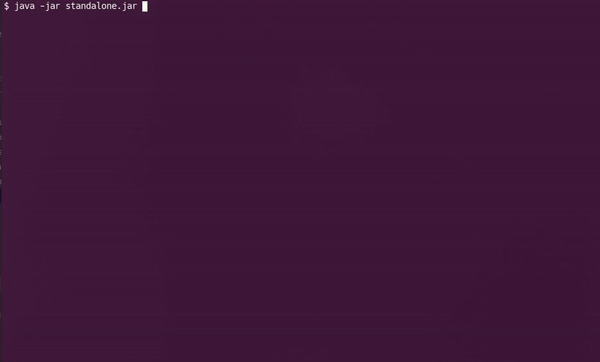

Examples
Standalone Application¶
Maven¶
Add to pom.xml
<dependencies>
<dependency>
<groupId>au.com.grieve.bcf</groupId>
<artifactId>terminalconsole</artifactId>
<version>1.4.1</version>
</dependency>
</dependencies>
Create Command Classes¶
ProcessCommand.java
@Command("process|p")
@Description("Process Stuff")
public class ProcessCommand extends TerminalCommand {
@Default
public void onDefault() {
System.err.println("Here is some help for this command\nMore stuff\nAnd more.");
}
@Arg("list(description=List Process) @int(min=1,max=6,switch=page,default=1,description=Page Number) @string(description=Process Name)")
public void onList(Integer pageNo, String processName) {
System.out.println("Process List: pageNo="+pageNo+", processName=" + processName);
}
@Arg("kill(description=Kill Process) @string(description=Process Name)")
public void onKill(String processName) {
System.out.println("Process Kill: processName=" + processName);
}
}
PleaseCommand.java
@Command("please|sudo")
@Description("Do as administrator")
public class PleaseCommand extends TerminalCommand {
@Arg("make sandwich|dinner|breakfast(suppress=false)")
public void onMake(String meal) {
System.out.println("Making " + meal);
}
@Arg("make bed")
public void onMakeBed() {
System.err.println("Make your own bed");
}
}
ThirdParty.java
public class ThirdParty extends TerminalCommand {
@Arg("pause(description=Pause Process) @string(description=Process Name)")
public void onPause(String processName) {
System.out.println("Process Pause: processName=" + processName);
}
}
Create a Console¶
Console.java
public class Console extends TerminalConsole {
@Override
protected boolean isRunning() {
return true;
}
@Override
protected void shutdown() {
}
@Override
protected LineReader buildReader(LineReaderBuilder builder) {
LineReader reader = super.buildReader(builder);
Map<String, CmdDesc> tailTips = new HashMap<>();
TailTipWidgets widgets = new TailTipWidgets(reader, tailTips);
widgets.enable();
return reader;
}
}
Create Main Program¶
Standalone.java
public class Standalone {
public static void main(String[] args) {
Console console = new Console();
TerminalCommandManager bcf = new TerminalCommandManager(console);
bcf.registerCommand(new ProcessCommand());
bcf.registerCommand(new PleaseCommand());
// Third Party
bcf.registerSubCommand(ProcessCommand.class, new ThirdParty());
// Launch
console.start();
}
}
Output¶

Last update:
2022-09-06